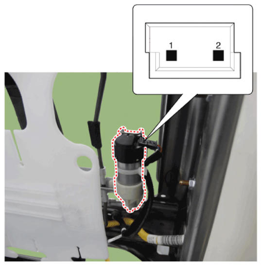
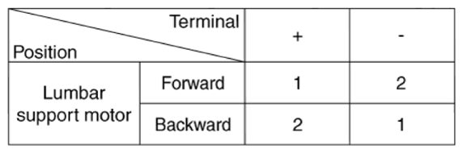

LEMON Manuals
: Even more car manuals for everyone: 1960-2025
Home
>>
Hyundai
>>
2022
>>
Elantra N Line, Standard Trans
>>
Repair and Diagnosis (Single Page)
>>
Accessories & Equipment
>>
Seats
>>
Seat Electrical (Except HEV)
>>
Lumber Support Units
>>
Repair Procedures
>>
Inspection
>>
Lumbar Support Motor
Lumbar Support Motor
Disconnect the connectors for each motor.
[Lumbar Support Motor]

Courtesy of HYUNDAI MOTOR AMERICA
With the battery connected directly to the motor terminals, check if the motors run smoothly.
Reverse the connections and check that the motor turns in reverse.
If there is an abnormality, replace the motors.

Courtesy of HYUNDAI MOTOR AMERICA